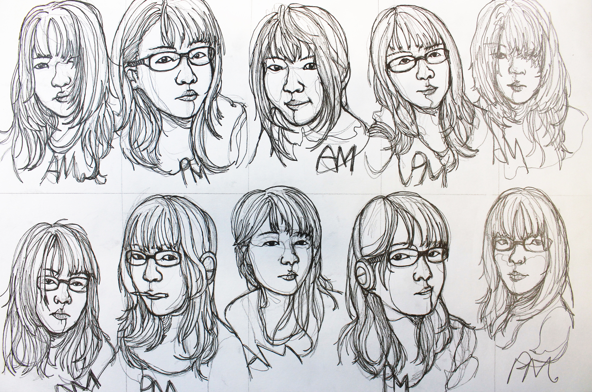
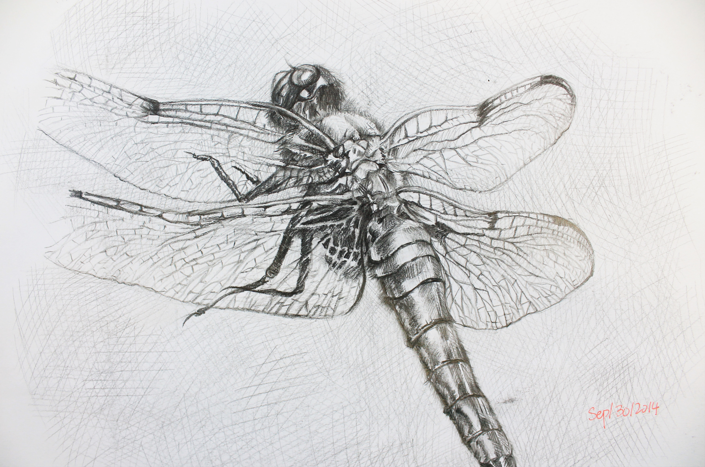
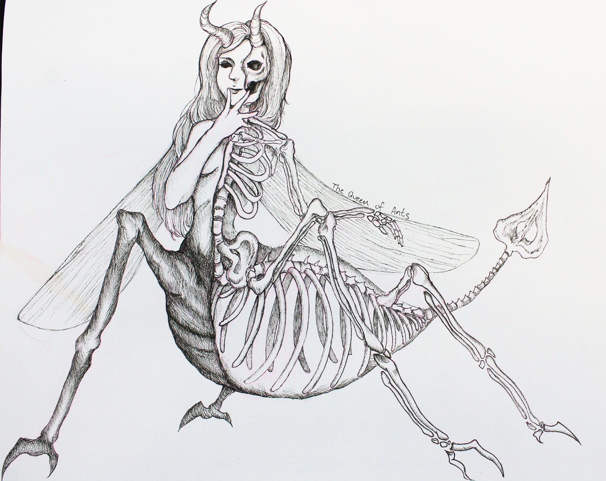
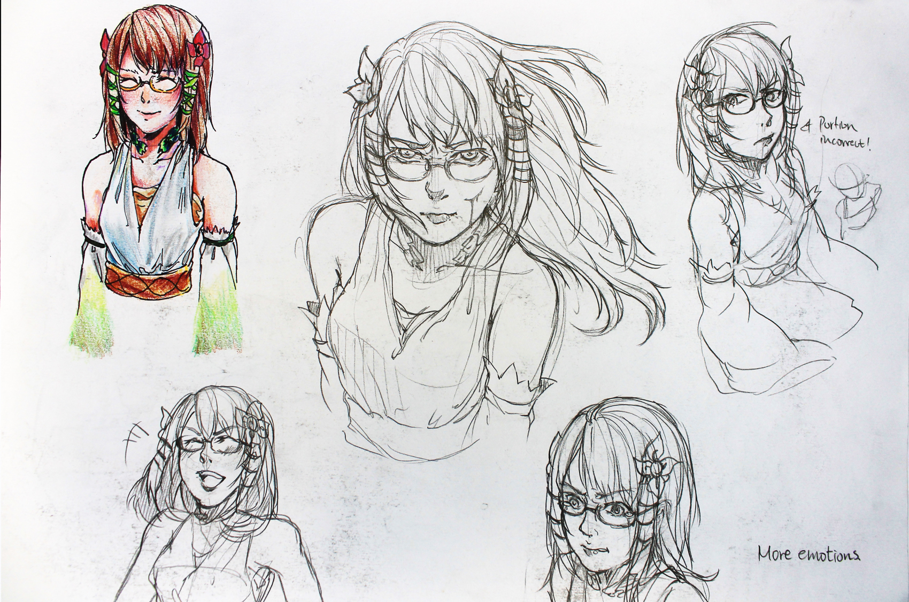
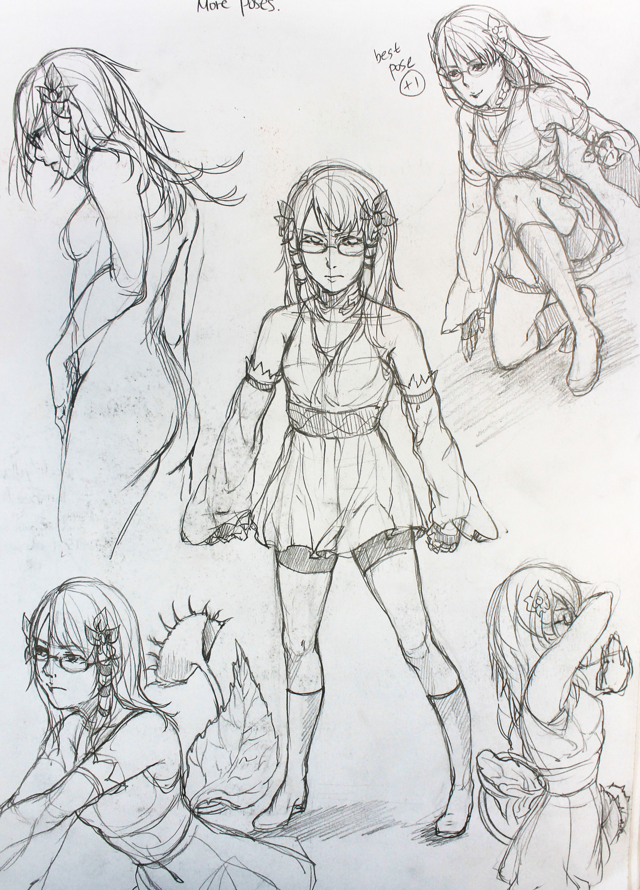
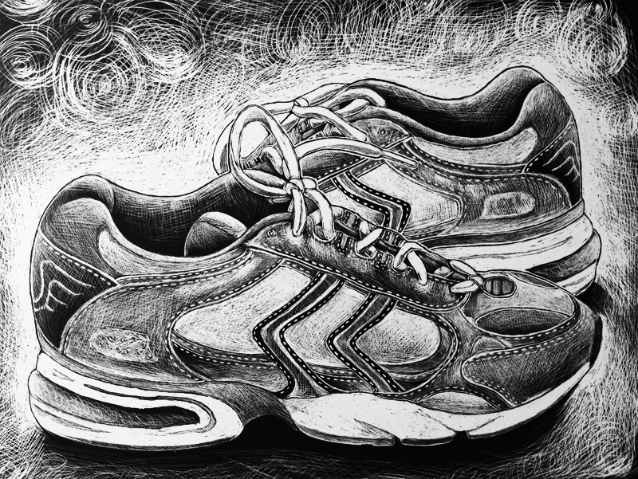
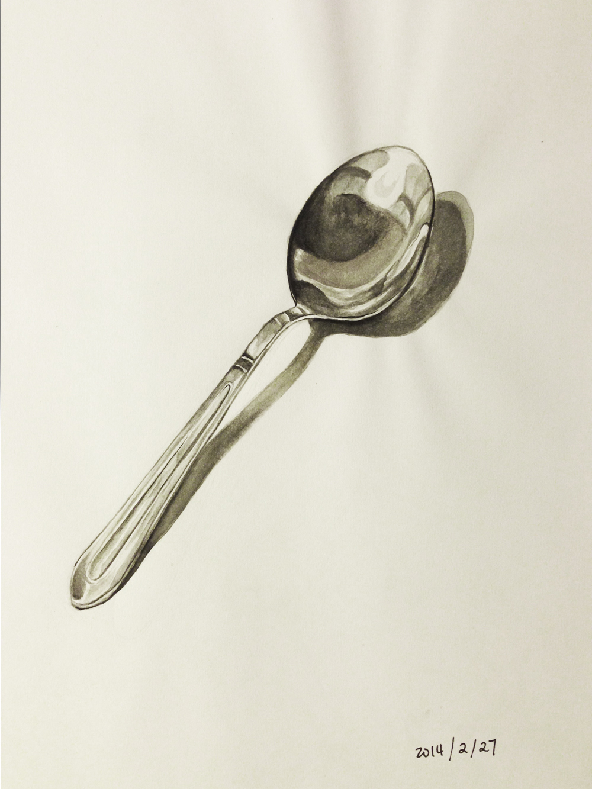
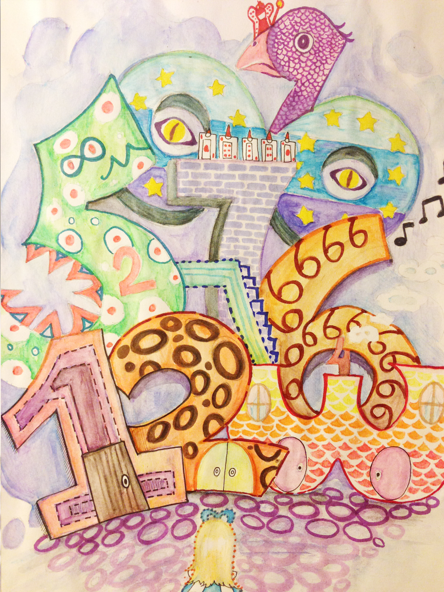

Miscellaneous Works
Materials: Involving pencil, fine-liner, markers, pencil crayons and watercolor
This is a collection of the previous sketchbook book activities that I've done.
Contour portrait using fine liner Page 1

Contour portrait using fine liner Page 2

Cross hatching anatomical sketch of a dragonfly

Skeletal sketch of an imaginary creature - Queen of ants

Character design sketches P1

Character design sketches P2

Realistic sketch of a genger using pencil
Scratch board sketch of my sport shoes
Watercolor realistic drawing of metallic spoon
A composition of repetitive numbers in the theme of Alice in Wonderland